二次開發指南
引言
AIDI 3.2 提供了一個用戶友好的二次開發協助工具，使得用戶可以在 GUI 介面上根據自己的AI模組和參數配置匯出定制化的範例代碼、模型與檔案。這一過程不僅簡化了集成流程，還確保了用戶能夠針對其特定的業務需求進行高效的二次開發，加速了 AI 科技在實際產業應用中的落地。
建議開發運行環境
開發系統： Win 10/11 編譯工具： Visual Studio 2022（最低支持Visual Studio 2013） 目標框架：支持.NET Framework 4.5以上
匯出可直接運行的VisualStudio範例專案
第一步： 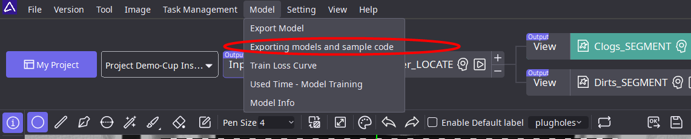 第二步： 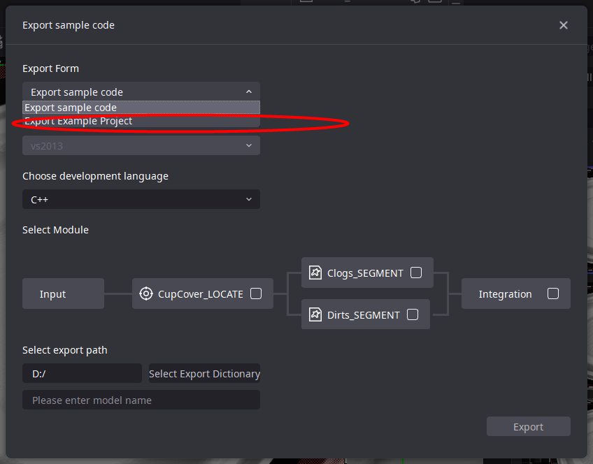 第三步： 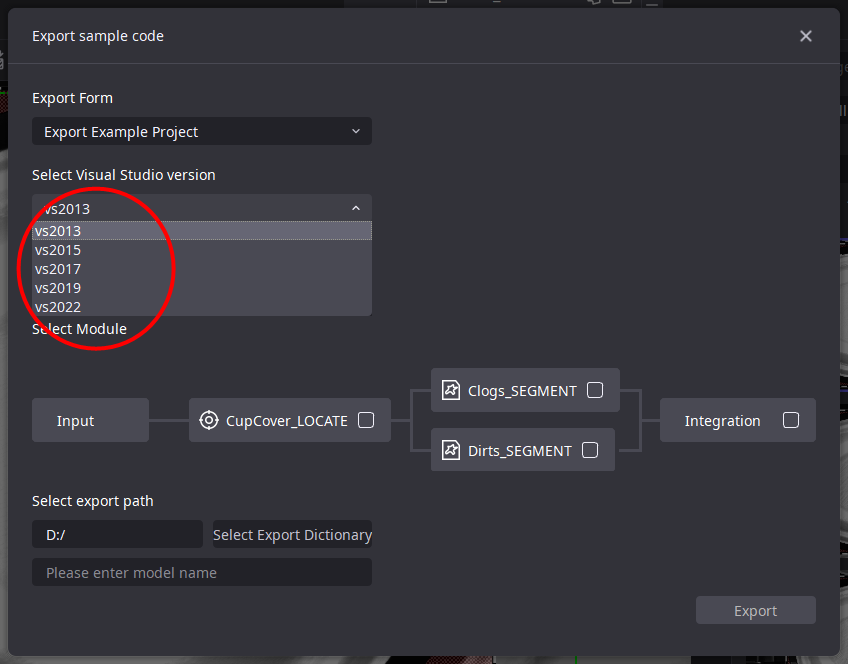 第四步： 選擇開發語言以及模組 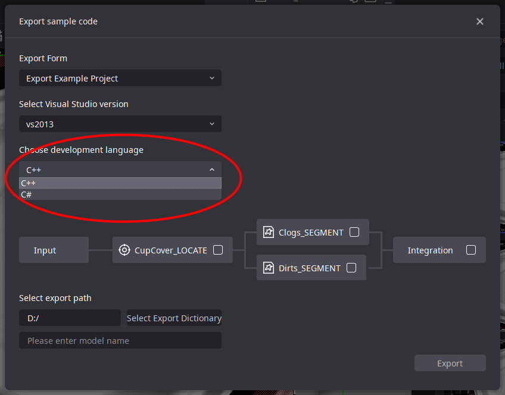 第五步： 選擇匯出路徑，定義模型名稱 第六步： 點擊匯出即可
匯出範例代碼
C++相依性準備
第一步：創建VS專案
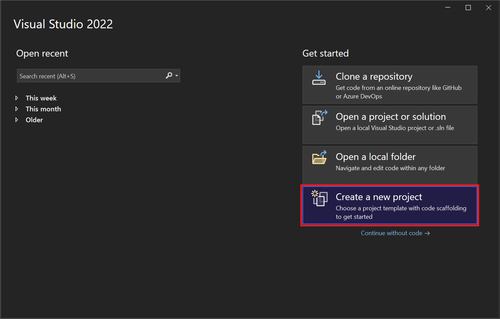
第二步：複製 CPP 檔案到你的本地項目中 將匯出的 example.cpp 檔案內容黏貼到 VS 中的 .cpp 檔案中。
第三步：配置項目 打開 Visual Studio 並加載您的項目。在“解決方案資料總管”中，找到您想要配置的項目。按右鍵項目名稱，從彈出的上下文選單中選擇“內容”選項。
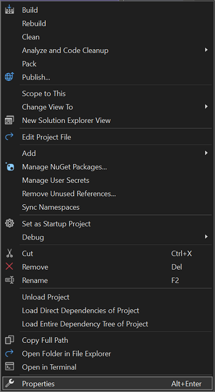
在“內容頁”視窗中，導航到“配置內容” -> “VC++目錄”。
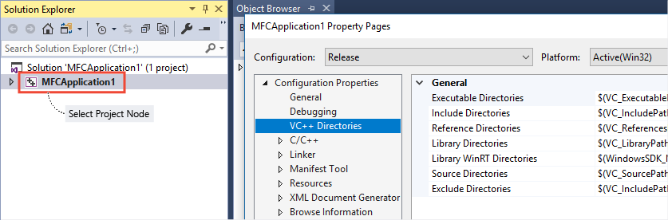
在“包含目錄”欄位中，添加 AIDI 安裝包內的“develop/C++/include”資料夾的路徑。 這個資料夾包含必要的標頭檔。你可以手動輸入路徑，也可以使用右側“下拉”按鈕瀏覽並選擇資料夾。
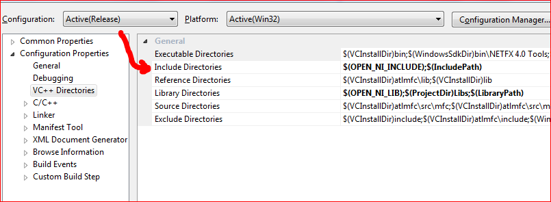
在“函式庫目錄”欄位中，添加 AIDI 安裝包內的“develop/C++/lib”資料夾的路徑。 這個資料夾包含必要的函式庫檔案。同樣，你可以手動輸入路徑，也可以使用“下拉”按鈕瀏覽並選擇資料夾。
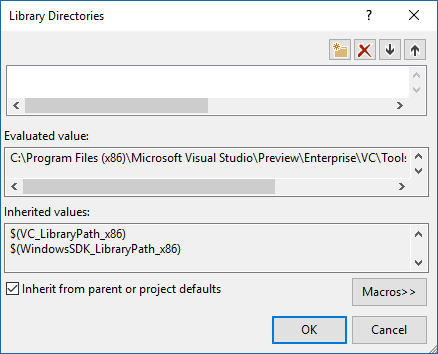
轉到“配置內容” -> “連結器” -> “輸入”，在“附加相依性項”欄位中，添加“visionflow.if.lib”。
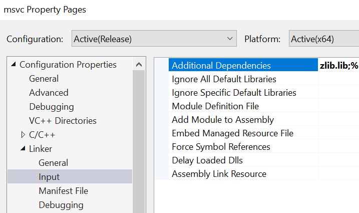
如使用Debug模式，轉到“配置內容” -> “連結器” -> “調試”，需確認“生成調試資訊”欄位元選擇“生成調試資訊（/DEBUG）”。
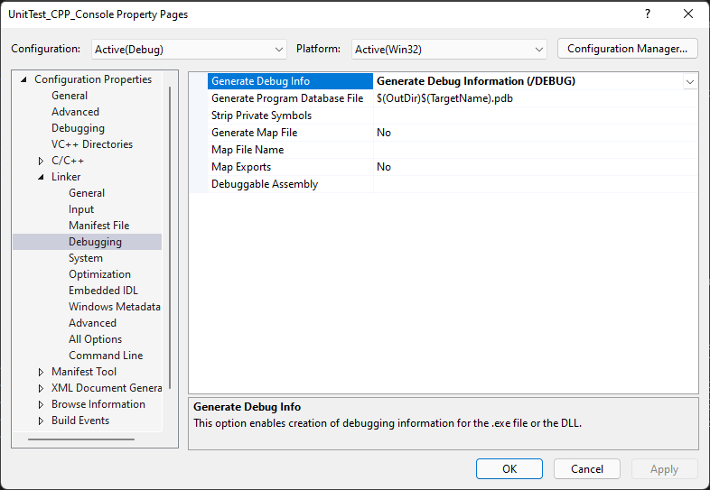
如使用中文工具名或中文路徑名，轉到“配置內容” -> “高級“，需確認”字元集“欄位不要選擇”未設定“。
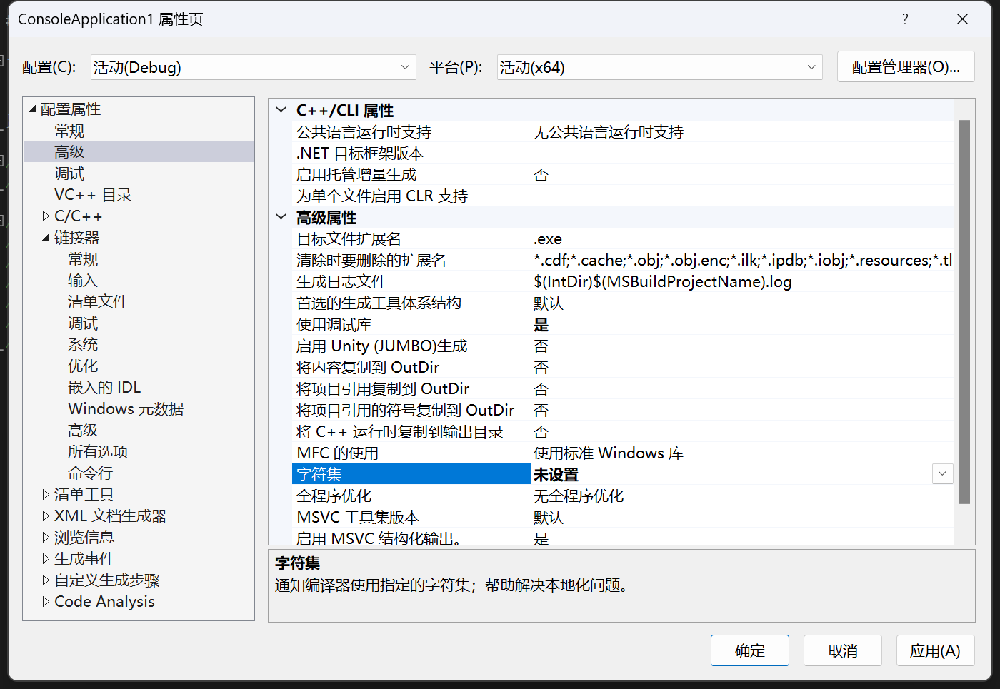
註：環境變數，需注意環境變數的優先順序，上面的環境變數優先順序高於下面的環境變數。
C#相依性準備
第一步：創建VS專案
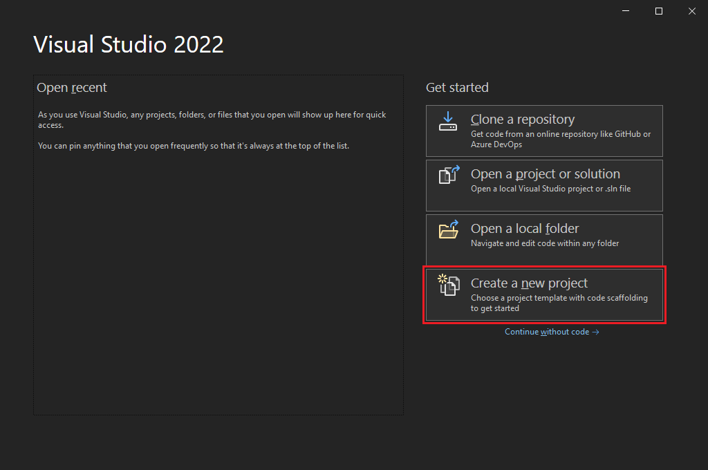
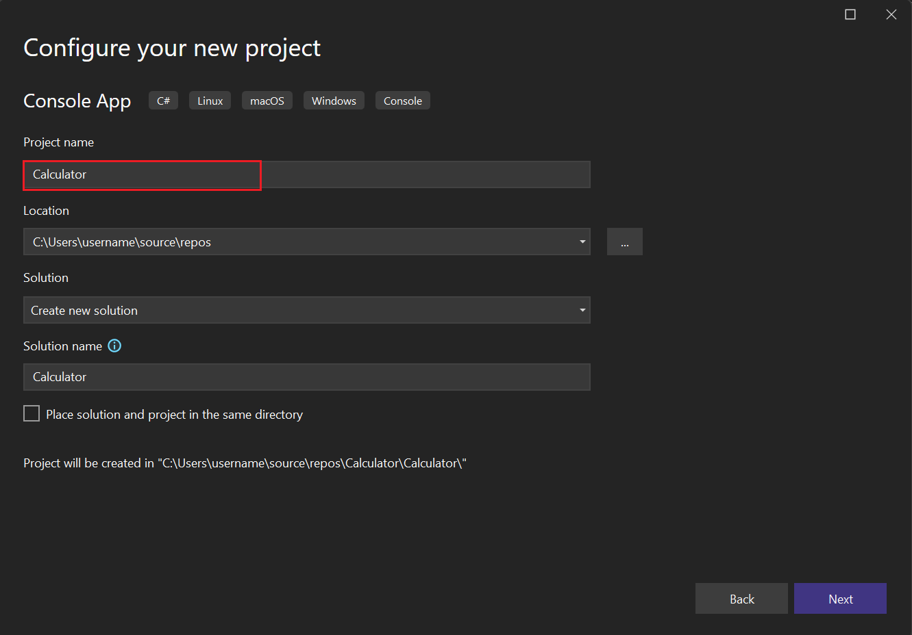
第二步：將匯出的 example.cs 檔案內容黏貼到你自己的 .cs 檔案中。 第三步：配置項目
將 AIDI 安裝目錄內的“develop/csharp/visionflow.cs”檔複製到你的 C# 項目中的所需位置。
在“解決方案資料總管”中點擊“顯示所有檔案”，找到“visionflow.cs”並右鍵點擊，選擇“包括在項目中”。
對於目標框架為.NET Framework的 C# 項目，需要額外的配置。在“解決方案資料總管”中，右鍵點擊你的項目， 從上下文功能表中選擇“內容”。選擇“生成”，確保“首選32位元”未選中。 註：環境變數，需注意環境變數的優先順序，上面的環境變數優先順序高於下面的環境變數。 AIDI 二次開發模組使用指南
打開AIDI軟體 啟動 AIDI 軟體，進入主介面。
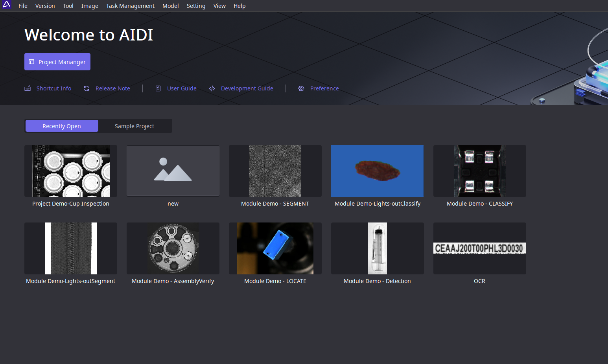
訪問具體的專案並選擇“模型與範例代碼匯出”
在 GUI 介面中，在功能表列“模型”中選擇“模型與範例代碼匯出”。
選擇所需匯出的 AI 配置
匯出二次開發範例 完成匯出配置後，點擊“匯出”按鈕。本地將生成二次開發所需的範例代碼，包括CPP檔、模型檔案等和相應的Readme檔案。
閱讀Readme檔案 匯出完成後，打開Readme檔案。該檔案包含了如何使用匯出的CPP範例代碼以及如何將AI模組集成到您的業務系統中的詳細說明和準備步驟。（其中 C# 和 C++ 的要求不同！）
集成到業務系統 按照Readme檔案中的指導，將CPP範例代碼集成到您的業務系統或產線中。您可能需要根據自己的系統環境和需求對程式碼進行適當的修改和調整，具體可參照範例中的注釋等。
測試和驗證 在集成了AI模組代碼後，進行充分的產線測試以確保一切工作正常。同時驗證AI模組的功能是否符合您的業務需求，並確保其在實際產線環境中穩定運行。 請注意，具體的操作步驟可能會根據AIDI軟體的版本和介面設計有所不同。